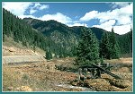
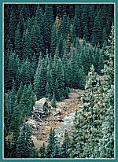

| The SGNRR was unique among the three small railroads operating out of Silverton. Many authors suggest Otto Mears built all three of the Silverton railroads. Mears was only responsible for building the SNRR and SRR. At the time the SGNRR was built, Mears was quite disinterested in his Colorado Railroads, due to the financial problems the SRR was experiencing. The SGNRR was built by the owners of the Gold King Mine after Mears had turned down their request for a branch line to Gladstone. The SGNRR had the shortest construction time and was also the shortest of the three Silverton lines at 7.17 miles in length. Mears eventually did own the SGNRR but that was to come later in its history. The SGNRR was the seconded longest lived of the three, only because abandonment did not come until the line had been inactive for many years. |

|
Silverton, Colorado
1875 (139k) |

|
Silverton, Colorado
1876 (126k) |
|
As prospectors fanned out in the Silverton area, several claims were established in the Gladstone area. By 1879, The Old Lout, Poughkeepsie, Red Roger, Saxton, Alaska, Bonanza and other claims were being worked. A wagon road was built to transport ore to Silverton from Gladstone. A chlorination works had been built in Gladstone at this time, but mining was still infrequent because title to the area had not been obtained from the Ute Indians. The Ute Indians made a final stand on the issue when several miners were killed. The incident became known as the Meeker Massacre, and it forced the Federal Government to step in and remove the Native Americans to a reservation in Utah.
|

|
Eureka, Colorado in 1889. The discovery of the Sunnyside Mine above Eureka brought many miners into the Gladstone area. - (178k)
(178k) |
| In mid June of 1898, W. Z. Kinney, Superintendent of the Gold King Mine in Gladstone, approached Alexander Anderson about building a branch line up Cement Creek. Anderson, the superintendent of the SNRR and SRR, had his own problems. The SRR was in receivership and most of the mines on the SRR were closed due to high water levels. Otto Mears had moved back East and was busy with his duties as president of both The Mack Truck Company and The Chesapeake Short Line Railroad at this time. The last thing Mears wanted to do was invest more capital in his Colorado railroads. |
| Due to Mears' lack of interest in the project, Anderson approached Kinney with a proposition. Since Mears had left the area and seemed sour on his Colorado properties, Anderson proposed building the line with Kinney's help. Anderson also went as far as to propose the purchase all of Mears properties, including the SNRR and SRR. The owners and stockholders of the mines in Gladstone were not that committed to a railroad. They turned Anderson down. |
| In 1899, the management and stock holders decided to build the railroad themselves. They required a connection with Silverton to help lower shipping expenses. The Silverton Gladstone and Northerly was chartered on April 6, 1899. The Rocky Mountain Construction Company was given the contract to build the line up Cement Creek to the mines and mills at Gladstone. Construction began immediately in April. The SNRR and SRR provided construction trains and crews at the rate of $10.00 per day while the construction was underway. |
| The complete cost of construction including locomotives and rolling stock was $230,000.00. The new line was completed on July 2, 1899. The total mileage on the new line was 7.17 miles. The steepest grade was 5.5 percent with an average grade over the line of 3.91 percent. There were 99 curves including a reverse curve at mile post five. These curves included five at 40 degrees, five at 36 degrees, one of 34 degrees, and the rest at 30 degrees or less. The railroad was turned over to its owners on July 27, 1899. They immediately went to work hauling ore and supplies to and from Gladstone. |
|
 |
The remains of a trestle along the old Silverton Gladstone and Northerly right of way
(153k) |
|
 |
The remains of a trestle along the old Silverton Gladstone and Northerly right of way
(101k) |
| After construction was complete, the next step was obtaining equipment for the new line. Kinney thought it would be a great idea if the SNRR continued to provided locomotives with crews to the SGNRR at the previously mentioned rate of $10.00 per day. Anderson and Mears thought the idea absurd, and offered the equipment at the rate of $450.00 per month. Neither party could agree upon a price, so the SGNRR turned to the same source Mears had, the D&RG. |

|
Silverton Gladstone & Northerly #32 ("Gold King")
1899 (Image m00444)(201k) |
| On August 1, 1899, a used class 56 2-8-0 was purchased from the D&RG. The locomotive was former RGS #32(the RGS was under receivership to the D&RG at this time). The locomotive had begun its career on the D&RG as #77 the "Rinconida." It was built in 1880, and was one of the original 13 locomotives Mears had purchased for the RGS in 1891. The locomotive was rebuilt in the Ridgway shops and arrived in Silverton on September 7, 1899. Rather than completely follow the example of its neighboring railroads, the SGNRR decided to purchase new rolling stock. The first purchase was a combination car given road number 1. They also purchased ten 32 foot boxcars given road numbers 1000-1009. |
| The first year of operation was very successful due the ore shipments the Gold King made over the line. Early in 1900, the SGNRR added 10 new 32 foot gondolas, numbered 2000-2009, to the roster. Later in October of the same year, another locomotive was purchased. The locomotive was another class 56 2-8-0 that had also served on the D&RG as their #78 the "Sandia." The locomotive did not come directly from the D&RG. After spending a few years on the RGS as their #33, it was sold to a dealer of used locomotives in Texas. The dealer found the locomotive in very poor shape and returned it to the RGS. The SGNRR, of course, stepped in to snap up this jewel and had nothing but trouble with it. The locomotive also used road # 33 while on the roster of the SGNRR. |
| The SGNRR did not purchase any new motive power until May of 1904. A class 88 outside framed consolidation was purchased. The new locomotive was given road number 34, and was much heavier than the two older locomotives. In fact, it was heavier than any other locomotive on any of the Silverton railroads. When the SNRR purchased a heavy locomotive like this, several extra ties had to be added and some trestles needed to be rebuilt. No mention was made of this problem on the SGNRR. It might have been because the roadbed was of higher quality. A year later in 1905, a new chair-baggage car was purchased. It was 38'-6" long and had seating for 40 passengers. It was assigned road number 2 and was the last new piece of rolling stock on the SGNRR. |

| The SGNRR was successful right from the start. The Gold King Mine and the other smaller mines in Gladstone shipped much ore. In 1901, Alexander Anderson, who had also noticed the good fortune of the SGNRR, offered a merger proposal that would involve all in Silverton. Kinney never responded to the offer. It is interesting that both parties, at one time or another, wished they had become involved with this railroad sooner. |
| Things went quite well for the SGNRR until 1908, when costs of operation started to eclipse revenues. One reason for the downturn in traffic is attributed to the closing of the Kendrick-Gelder smelter, on the SGNRR, just outside Silverton. The entire region had also entered a slump that would last until a short revival during WWI. This caused the stock holders of the SGNRR to vote in several changes in management during this time. None of the changes would make a difference. The problem was not the management, but poor metal Silver prices. The end of 1909 found the railroad in worse shape than the prior year. The largest mine on the SGNRR, the Gold King, finally closed due to litigation and strikes. |
| The Gold King's problems created an opportunity for Mears. He made a proposal to the owners of the Gold King Mine. Mears would lease the mine and reopen it. Mears had done very well with a similar venture involving the Iowa-Tiger proprieties years earlier. The offer was accepted and Mears also convinced them to let him lease the SGNRR. Mears held the lease on the mine until 1916, and later purchased the railroad at a tax sale. |
| The lease of the SGNRR finally gave Mears control of all three of the Silverton lines. Mears had also moved to Silverton in 1904, and was taking a greater interest in his Colorado properties. The consolidation allowed Mears to shift equipment between railroads. It was at this time two old Silverton pioneers were retired. Silverton Railroad # 100 and SGNRR #32 were pushed onto the RIP track in Silverton. The boiler of #32 and the bodies of two pioneer passenger cars, the "Red Mountain" and the "Yankee Girl," were taken to the "Teft" spur on the Silverton branch of the D&RG. Here Mears built a sawmill that produced ties and timbers for the local mines. The equipment was still at this location until 1974. |
| 1909 and 1910 were very wet years and the resulting rain caused much damage on all of the railroads in the Silverton area. The damage was quickly repaired during these two years and operations resumed without much lost time. 1911 brought the worst floods the area residents had ever seen. The damages to all of the regions railroads were extensive. The damage on the SRR and the SNRR was repaired in a short time. Damage was so extensive on the SGNRR that the line remained closed until the spring of 1912. The damages to the three railroads cost Mears more than $25,000.00 to repair. |
| The experiences of 1911 caused Mears to reevaluate his interest in Colorado. He decided a move to California was in order. He turned over local control of his properties to his son-in-law James Pitcher. Pitcher had been working under Mears guidance for five years, and was an able replacement. Pitcher jumped right in and did a very good job of running things, but the next 12 years would see things get slow in Silverton. The damage to the SGNRR was not repaired until 1912. During this period the Gold King brought its ore to Silverton by wagon. With the Railroad out of commission, the owners of the SGNRR for the first time missed the payment on their mortgage. When contacted by the bankers, Pitcher informed them he was only the lessor of the railroad. |
| 1913-1915 would see the SGNRR cut train service to three trains a week. The traffic over the road slowed to a crawl. Finally on July 10, 1915, the owners lost the railroad to foreclosure. Mears stepped in and purchased the property at a significant discount. Mears purchased the SGNRR for $14,600.00 at a tax. That is not a bad price if one remembers the line originally cost $230,000.00. On July 23, 1912, all assets of the SGNRR were transferred to the SNRR and it became the Gladstone Branch of the SNRR. |
| 1916 saw an increase in activity due to WWI in Europe. Zinc was necessary for the production of shell casings used in the war effort. The mines in Silverton had zinc so the railroads were enjoying an increase in shipments. For example, the SRR shipped 158 cars and the SNRR recorded 185 cars of ore in September of 1916. The Gladstone Branch however only shipped six cars that month. |
| After WWI, things in the Silverton area worsened and continued that way for several years. From 1916 until 1921 the oldest of the three Silverton lines was in its death throws. The pioneer Silverton Railway was finally abandoned on June 17, 1922. That fall, the Gold King Mine closed again, removing the only reason to keep the Gladstone Branch in operation. Pitcher kept the line intact because periodically, rumors of the Gold King re opening would circulate. The Gold King was the Second best producer in the area and shipped 711,144 tons of ore while in operation. This ore was valued at $8,385,407.00. The total production for San Juan County during the years of 1873-1923 totaled $70,381,891.00. |
| The Gladstone Branch was not in use during the rest of the 1920's, and for most of the 1930's. The line was kept on the books to keep the SNRR's valuations up. Finally after years of low silver prices and the damage the region suffered in the depression, the SNRR abandoned the Gladstone and Green Mountain Branches. A hearing was held to abandon the line on November 17, 1937. The branch was removed from the San Juan County tax base in 1938, and all equipment was transferred to the SNRR. The last of the Silverton railroads, The Silverton Northern, went down on August 7, 1942, ending a very colorful era in Colorado's history. |
| Road Number | Name | Type | Engine Weight | Tractive Effort | Drivers | Origin and History |
| #32 | Gold King | 2-8-0 | 56,200 | 13,025 | 36" | Originally DRG class 56, #77 the "Rinconida". Valued at $4,4744.72 when transferred to DRGW as their #77 in July of 1886. Sold to the RGS to become #32 in November of 1891. Purchased by SG&NRR to remain #32 for $3,252.00 in August of 1899. Scrapped in Silverton around 1911. The boiler was used to make a sawmill at Tefft Spur. |
| #33 | none | 2-8-0 | 56,200 | 13,025 | 36" | Originally DRG class 56, #78 the "Sandia". Valued at $4,383.99 when transferred to DRGW in July 1886. Sold to RGS to become their #33. Later sold to G.M. Dilley and son of Palestine, Texas in September 1899. Repurchased from Dilley by the SG&N RR to become #33 October of 1900. Scrapped in Silverton in 1923. |
| #34 | Gold Prince | 2-8-0 | 88,100 | 18,800 | 37" | Purchased new. Baldwin class 10-26-E-316. Originally painted olive and aluminum. Acquired second hand by SNRR to become their #34 in January of 1915 when the SG&NRR was purchased by the SNRR. |